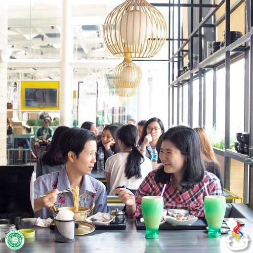
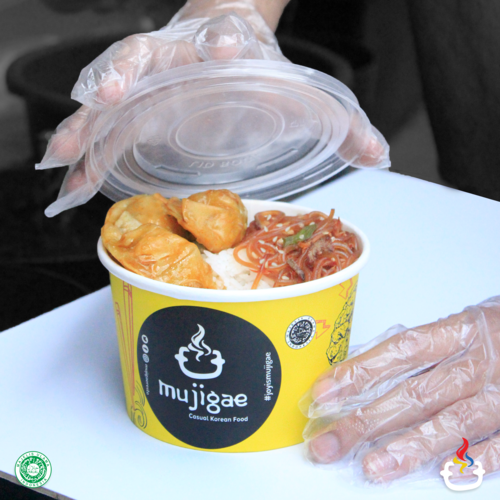

Our Outlets |
|
|---|---|
|  |  |
Dine-in Resto |
Mujigae Korean Delivery |
|
Nikmati momen spesial bersama orang tersayangmu dengan menu favorit di Mujigae. Lokasi yang nyaman dan suasana yang asik sangat cocok untuk dikunjungi bersama keluarga. |
Kini Mujigae hadir di aplikasi pengantaran makanan favoritmu! Kamu bisa pesan menu-menu favorit melalui GoFood, AirAsia Food, GrabFood, ShopeeFood, dan Pembelian Langsung (Takeaway). |
Lokasi Dine-in Resto |
|---|
BANDUNG |
|
BEKASI |
|
TANGERANG |
|
Lokasi Mujigae Korean Delivery |
||
|---|---|---|
JAKARTA |
BOGOR |
DEPOK |
|
|
|
BEKASI |
TANGERANG |
BANDUNG |
|
|
|
SUMEDANG |
PURWAKARTA |
KARAWANG |
|
|
|